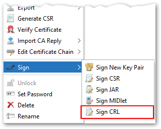

Previous versions of KSE had some basic CA features like signing X.509 certificates, key creation, PKCS#10 requests, support for many X.509 extensions, extension profiles, but revokating certificates by creating/signing a certificate revocation list (CRL) has been missing so far.
This has changed in version 5.5.0. In the context menu of key pair entries is now a new item called "Sign CRL", which opens the dialog on the right.

Certificates can be added to the CRL in three ways:
- By selecting a certificate from a keystore file.
- By selecting a certificate file.
- By selecting an older CRL from the same issuer certificate.
The generated CRL can then be saved to the file system in PEM or DER format.
The feature uses an automatically created file with the issuer serial number as its name and ".db" as its extension to save meta data like CRL serial number, the revoked certificates and the validity period. This makes creating subsequent CRLs much easier.
This feature was contributed by Jairo Graterón.